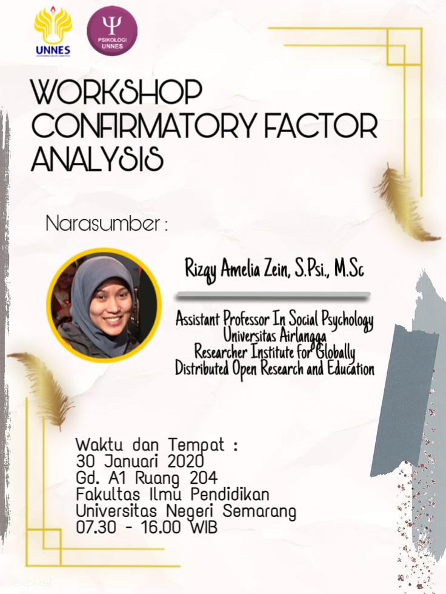

Workshop Confirmatory Factor Analysis (LVM)
Deskripsi
Berikut adalah repositori yang digunakan untuk menyimpan semua materi untuk Workshop Confirmatory Factor Analysis yang diselenggarakan oleh Fakultas Psikologi, Universitas Negeri Semarang. Materi workshop ini merupakan bagian (yang dimodifikasi) dari workshop Multigroup Structural Equation modeling yang diadakan oleh Fakultas Psikologi Universitas Airlangga. Untuk mengakses materi dan rekaman dari workshop MG-SEM, silahkan klik tautan ini.
Materi berlisensi Creative Commons BY 4.0. Materi bebas digunakan kembali namun wajib mengatribusi sumber aslinya.
Waktu dan tempat
Workshop diselenggarakan pada hari Kamis, 30 Januari 2020, pukul 07.30-16.00 WIB di Gedung A1 Ruang 204 Fakultas Ilmu Pendidikan, Universitas Negeri Semarang.
Outline materi
Berikut adalah outline materi workshop:
Pengantar
- Apa itu latent variable modeling (LVM)?
- Mengapa dan pada kondisi seperti apa LVM diperlukan?
- Beberapa pilihan perangkat lunak untuk mengeksekusi LVM
- Yang tidak dicakup dalam workshop serta keterbatasan JASP
Korelasi
- Jenis-jenis koefisien korelasi
- Faktor-faktor yang membuat koefisien korelasi bervariasi
- Koreksi atenuasi dan measurement error
- Variance-covariance dan correlation matrix
- WARNING! Covariance/correlation matrix is not positive definite
- Heywood dan ultra-Heywood case
- Bivariat, part, dan partial correlation
- Metrik variabel (standardised vs unstandardised)
Model Jalur (Path Model) dan Model Regresi
- Definisi path model
- Nama variabel dan koefisien jalur (path coefficients)
- δ (delta), ε (epsilon), ξ (ksi), η (eta), λ (lambda), γ (gamma), β (beta), φ (phi), ζ (zeta)
- Representasi visual model jalur menggunakan diagram jalur (path diagram)
- Menggambarkan hubungan antar-variabel dengan menggunakan diagram jalur
- Syntax
lavaanuntuk spesifikasi model jalur - Asumsi kausalitas (?) dan limitasi
Confirmatory Factor Analysis (CFA)
- Definisi factor analysis
- Exploratory vs confirmatory factor analysis
- Kapan menggunakan CFA?
- Constraining parameter model
- Model pengukuran (paralel, tau equivalence, dan congeneric)
- Variabel indikator (reflektif vs formatif)
- Correlated error variances
- Metode estimasi
- Jenis-jenis kriteria untuk menilai ketepatan model (model fit)
- Model fit
- Model comparison/Incremental fit indices
- Model parsimony
- Parameter fit
- Menuliskan hasil analisis CFA dalam laporan penelitian
Referensi
- Baujean, A.A. (2014). Latent Variable Modeling Using R: A step-by-step guide. New York: Routledge.
- Schumacker, R.E. & Lomax, R.G. (2016). A Beginner’s Guide to Structural Equation Modeling (4th edition). New York: Routledge.
- Van De Schoot, R., Schmidt, P., De Beuckelaer, A., Lek, K., & Zondervan-Zwijnenburg, M. (2015). Measurement invariance. Frontiers in psychology, 6, 1064.
- Putnick, D. L., & Bornstein, M. H. (2016). Measurement invariance conventions and reporting: The state of the art and future directions for psychological research. Developmental review, 41, 71-90.
- Cho, E. (2016). Making Reliability Reliable: A Systematic approach to reliability coefficients. Organizational Research Methods, 19(4), 651-682.
Contoh penelitian dengan CFA
- Rodriguez, V. J., Radusky, P. D., Kumar, M., Nemeroff, C. B., & Jones, D. (2018). Measurement invariance of the Childhood Trauma Questionnaire by gender, poverty level, and HIV status. Personalized Medicine in Psychiatry, 11, 16-22.
- Liu, Y., Millsap, R. E., West, S. G., Tein, J. Y., Tanaka, R., & Grimm, K. J. (2017). Testing measurement invariance in longitudinal data with ordered-categorical measures. Psychological methods, 22(3), 486.
- Bowden, S. C., Saklofske, D. H., Van de Vijver, F. J. R., Sudarshan, N. J., & Eysenck, S. B. G. (2016). Cross-cultural measurement invariance of the Eysenck Personality Questionnaire across 33 countries. Personality and Individual Differences, 103, 53-60.
- Bieda, A., Hirschfeld, G., Schönfeld, P., Brailovskaia, J., Zhang, X. C., & Margraf, J. (2017). Universal happiness? Cross-cultural measurement invariance of scales assessing positive mental health. Psychological assessment, 29(4), 408.
Sumber belajar lainnya
Sebelum mulai workshop
- Sebaiknya semua peserta sudah memasang JASP versi 0.11.1 pada perangkatnya masing-masing, untuk menghindari terlalu banyaknya waktu untuk menyelesaikan troubleshooting instalasi ketika workshop.
- Peserta sangat disarankan untuk menonton video tutorial JASP di bawah ini sebelum workshop untuk belajar menavigasikan menu dan fitur yang ada dalam JASP (total durasi kurang lebih hanya 5 menit).
Video rekaman
Sesi 1 (09.00-12.00)
Sesi 2 (13.00-16.00)
Pembaruan dan koreksi
Poster kegiatan

Jawaban Latihan
Latihan Mandiri (1):
Klik disini untuk melihat jawaban saya atas latihan mandiri (1).
Latihan Mandiri (2):
Klik disini untuk melihat jawaban saya atas latihan mandiri (2).
Latihan Mandiri (3):
Klik disini untuk melihat jawaban saya atas latihan mandiri (3).